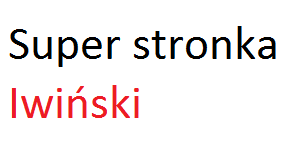
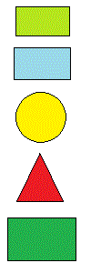

<html>
<head>
<meta charset="utf-8">
</head>
<body>
<table width=900 border="1" align="center">
<tr>
<td colspan="3" align="center">

</td>
</tr>


<tr>


<td width=18% align="center">
<ul>
<li>
<a href="https://edu.gdansk.pl/index.html" target="obszar_glowny">Strona GPE</a>
 </li>
<li>
<a href="https://www.gdansk.pl/" target="obszar_glowny">Strona miasta Gdańsk</a>
 </li>
 <li>
<a href="https://zse.edu.gdansk.pl/" target="obszar_glowny">Strona ZSE</a>
</li>
<li>
<a href="https://www.kuratorium.gda.pl/" target="obszar_glowny">Strona Kuratorium</a>
</li>
<li>
<a href="glowny_Iwinski.html" target="obszar_glowny">Początek</a>
</li>
</ul>


</td>
<td align=center>
<iframe  scrolling="yes" width=650 height=420 name="obszar_glowny" src="glowny_iwinski.html" border="0"></iframe>
</td>


<td  align=center width=100 height=300 >
prawe menu

<map id="mapa_Iwiński" name="kolorki">

<area shape="rect" coords="17,7,76,39" href="prostok.zip" target="obszar_glowny">
<area shape="rect" coords="15,52,77,87" href="tabela_Iwiński.html" target="obszar_glowny" >
<area shape="circle" coords="44,128,29" href="formularz_iwiński.html" target="obszar_glowny" >
<area shape="poly" coords="18,221,69,221,44,170" href="mailto:mkryniew@ids.gda.pl" target="obszar_glowny">
<area shape="rect" coords="8,239,83,286" href="https://patrykiwinski.github.io/Witrynyiaplikacje/"target="obszar_glowny" >
</map>
</td>


</tr>
<tr>
<td colspan="3" align="center">
<b>stopka Iwiński</b>, 
<br>
Gdańsk 11.02.2023
</td>
</tr>
</table>
</body>
</html>
Footer
© 2023 GitHub, Inc.
Footer navigation

    Terms
    Privacy
    Security
    Status
    Docs
    Contact GitHub
    Pricing
    API
    Training
    Blog
    About

2cz-/Indexzad13 — kopia.html at main · patrykiwinski/2cz-
